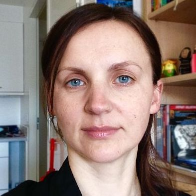

The 4th Perception Test Challenge at ECCV
Do large multimodal models truly understand the spatial structure of the world they perceive? Given that they are largely trained on passive, internet-scale data, how do they represent environments across scales, from the tabletop in a tea preparation video to the city-scale layout of an hour-long walking tour?
Put your model to test and win prizes totalling 20K EUR!
NEW this year: KilometerVision track probing spatial intelligence in walking tour videos, including questions on distance estimation, landmark recognition, compass, map understanding.
NEW this year: Hour-Long Audio-Video task probing multimodal audio-video understanding in hour-long walking tour videos.
Challenge
Speakers
University College London
 Technical University Munich
Technical University Munich
 Cornell University
Cornell University
Workshop Agenda
- 09:00 - 09:10 Welcome and introduction
- 09:10 - 09:30 Challenge overview (Viorica Patraucean)
- 09:30 - 10:00 Keynote (Laura Leal-Taixé)
- 10:00 - 10:45 Coffee break
- 10:45 - 11:15 Keynote (Noah Snavely)
- 11:15 - 12:00 Challenge results
- 12:00 - 12:30 Keynote (Hugo Spiers)
- 12:30 - 13:00 Panel discussion
Challenge Timeline
- June 20: Challenge server with validation tasks goes live
- July 15: Test data and tasks released
- August 27: Deadline for submissions
- August 31: Deadline for tech report submissions
- September 3: Decision to participants
Organizers

Viorica Patraucean
Google DeepMind
Fedor Kitashov
Google DeepMind
Joao Carreira
Google DeepMind
Dima Damen
Bristol University
Andrew Zisserman
Oxford University